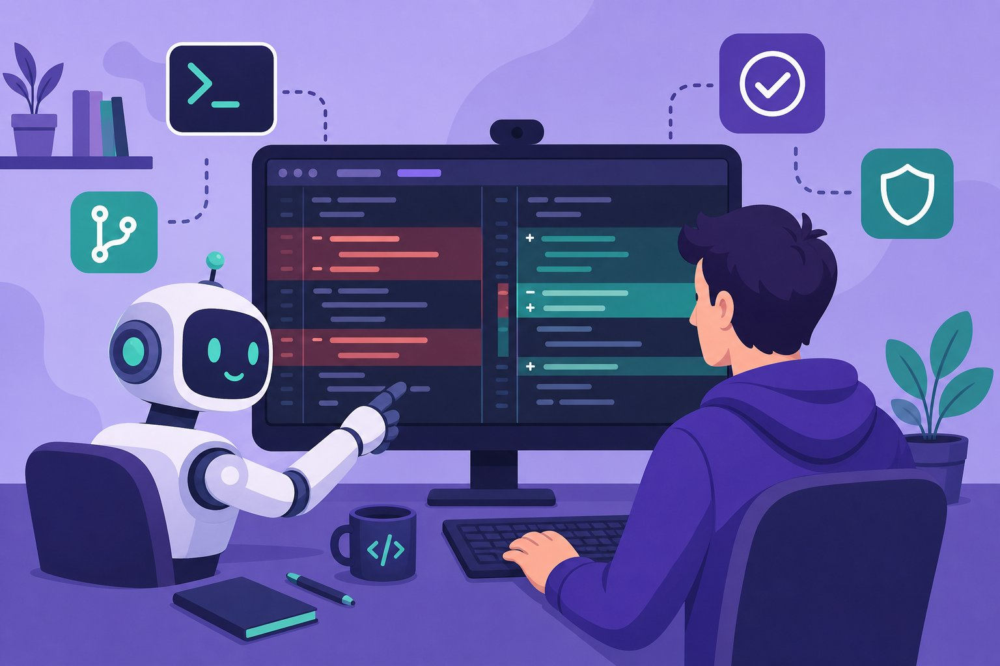

Coding agents & repo-level AI
Autocomplete was just the warm-up. Coding agents read whole repositories, run tests, and open PRs. Learn the loop that makes them work, how to benchmark them honestly, and the guardrails that keep them from deleting production.

Figure 63.1 — The agent is the junior dev who never sleeps. You are still the reviewer who signs the merge.
1. The agent loop (beyond autocomplete)
- Repo context wins: the agent must find the right files (retrieval over code + symbols), not just the open tab. Index the repo; give it grep, tests, and git history as tools (Ch 23, Ch 48).
- Tests are the spec: fail-to-pass tests define “done”. No tests → the agent optimises vibes. Write the test first, then prompt.
- Small patches: cap diff size per turn; huge rewrites fail review and hide bugs. Iterate like a careful junior.
2. Benchmarks & honest measurement
| Benchmark | What it tests | Honest-reading tip |
|---|---|---|
| SWE-bench | Real GitHub issues → patch passes hidden tests | % resolved; watch for overfitting to the repo set |
| SWE-bench Multimodal / Multilingual | Same idea beyond Python-only, text-only | Mind the language you actually ship |
| Repo-level tasks | Multi-file refactors, migrations | Closer to your job than single-function puzzles |
| Your own suite | 10–20 recent tickets, replayed monthly | The only leaderboard that matters (Ch 61) |
3. Guardrails (agents have root; act like it)
- Sandbox execution: containers with no prod creds, no network except allowlist, kill switch (Ch 62).
- Human-gated side effects: agent proposes, human approves deploys, migrations, and external sends (Ch 24).
- Secret hygiene: .env and keys never enter prompts; scan diffs for leaked credentials (Ch 59).
- Review the reasoning, not just the diff: keep tool-call traces on the PR; a green test with a nonsense trace is a red flag.
Autonomy ceiling
Top agents resolve a large share of benchmark issues — and still fail boringly on yours: wrong file, plausible-but-wrong fix, deleted edge case. Never auto-merge agent PRs to main; require human review plus the full CI suite. Speed without verification is just faster incidents.
Short notes
Loop: spec (+tests) → repo context → small edits → verify → human-signed PR. Retrieval over code beats long prompts; fail-to-pass tests define done. Benchmark on SWE-bench plus your own replayed tickets. Sandbox everything, gate side effects on humans, keep traces on PRs, never auto-merge to main.
Point notes
- Tests are the spec.
- Repo context beats tab context.
- Small patches, full CI.
- Sandbox + human gates.
- Traces are the review.
MCQs
5 questions1. What defines “done” for a coding-agent task?
2. SWE-bench measures:
3. Why cap patch size per turn?
4. The single most important guardrail for an agent with shell access:
5. A green test suite with a nonsense tool-call trace means:
Practice questions
P1. Set up a coding agent on your repo: list the tools, context index, and first 3 guardrails you’d configure.
Tools: read/grep over indexed repo, run focused tests, git diff/log, no raw shell to prod. Context: symbol + embedding index refreshed on commit; feed issue text + linked files first. Guardrails: (1) container sandbox, secrets mounted read-only-outside, (2) max ~200 changed lines per turn + full CI required, (3) human approval for migrations/deploys/external calls; traces attached to every PR.
P2. Your agent “fixes” a bug but the fail-to-pass test still fails on turn 5. Walk through your next 3 debugging steps.
(1) Read the trace: which files did it actually touch vs the stack trace’s files — usually wrong-file retrieval. (2) Check the test itself: is it flaky, environment-dependent, or testing behaviour the issue never specified? (3) Shrink scope: reset, point it at one file + one failing assertion, forbid unrelated refactors. If still stuck after N turns, take over manually — escalation is a feature.
P3. Build a 10-ticket replay suite for your team. What do you record, and how do you score fairly across model upgrades?
Record: issue text, repo snapshot, fail-to-pass + pass-to-pass tests, time-to-fix by a human baseline. Score: % resolved unaided, median turns, regression count, and human review-accept rate. Pin snapshots and model versions per run; re-run monthly; never let the suite leak into training/fine-tune data (contamination invalidates the leaderboard).